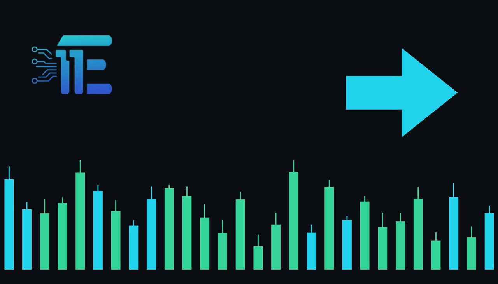

Bitcoin and Gold Rank as Worst Major Assets in 2026ប៊ីតខ}}=់ និងមាស ក្លាយជាទ្រព្យសកម្មខ្សោយជាងគេក្នុងឆ្នាំ 2026
XAU/USD impact: ● Neutralផលប៉ះពាល់លើ XAU/USD: ● អព្យាក្រឹត

Bitcoin and gold are currently among the worst-performing major assets of 2026 according to recent data. The development highlights how oil dynamics and Federal Reserve policy are impacting safe havens.
ប៊ីតខ}}}}=់ និងមាសស្ថិតក្នុងចំណោមទ្រព្យសកម្មធំៗដែលមានដំណើរការខ្សោយជាងគេក្នុងឆ្នាំ 2026 យោងតាមទិន្នន័យថ្មីៗ។ ការវិវត្តនេះបង្ហាញពីរបៀបដែលថាមពលប្រេង និងគោលនយោបាយ Fed កំពុងប៉ះពាល់ដល់ទ្រព្យសុវត្ថិភាព។
According to data from Charlie Bilello, both bitcoin and gold have emerged as the worst-performing major assets of the year 2026. This historic first for the two widely recognized safe havens brings broader macroeconomic pressures into sharp focus for market participants.
យោងតាមទិន្នន័យពី Charlie Bilello ទាំងប៊ីតខ}}}}=់ និងមាសបានក្លាយជាទ្រព្យសកម្មធំៗដែលមានដំណើរការខ្សោយជាងគេប្រចាំឆ្នាំ 2026។ ព្រឹត្តិការណ៍ប្រវត្តិសាស្ត្រដំបូងនេះសម្រាប់ទ្រព្យសុវត្ថិភាពទាំងពីរ បានទាក់ទាញចំណាប់អារម្មណ៍យ៉ាងខ្លាំងទៅលើសម្ពាធម៉ាក្រូសេដ្ឋកិច្ចសម្រាប់អ្នកចូលរួមក្នុងទីផ្សារ។
The transmission channel affecting gold involves shifting macroeconomic dynamics, specifically driven by oil market fluctuations and broader monetary policy stances by the Fed. Changes in energy costs directly influence broader inflation expectations, while interest rate outlooks dictate the opportunity cost of holding non-yielding precious metals against interest-bearing assets like US Treasuries.
ច្រកបញ្ជូនដែលប៉ះពាល់ដល់មាសពាក់ព័ន្ធនឹងការផ្លាស់ប្តូរស្ថានភាពម៉ាក្រូសេដ្ឋកិច្ច ដែលជំរុញជាពិសេសដោយការប្រែប្រួលទីផ្សារប្រេង និងគោលនយោបាយរូបិយវត្ថុរបស់ Fed។ ការប្រែប្រួលថ្លៃថាមពលប៉ះពាល់ដោយផ្ទាល់ដល់ការរំពឹងទុកអតិផរណា ខណៈដែលទស្សនវិស័យអត្រាការប្រាក់កំណត់តម្លៃដើមនៃការកាន់កាប់មាសដែលគ្មានការប្រាក់ធៀបនឹងទ្រព្យសកម្មដែលមានអត្រាការប្រាក់ដូចជាសញ្ញាប័ណ្ណរតនាគារអាមេរិក។
Looking at potential scenarios, supportive conditions for gold typically arise when energy shocks stoke persistent inflation fears or when expectations of looser monetary policy lower real yields and weaken the US dollar. Conversely, persistent high interest rates and strong performance in competing asset classes apply downward pressure on the metal.
ផ្អែកលើស្ថានភាពដែលអាចកើតមាន ឬនៅពេលដែលការរំពឹងទុកនៃការបន្ធូរបន្ថយគោលនយោបាយរូបិយវត្ថុធ្វើឱ្យអត្រាការប្រាក់ពិតប្រាកដធ្លាក់ចុះ និងធ្វើឱ្យដុល្លារអាមេរិកខ្សោយចុះ។ ផ្ទុយទៅវិញ អត្រាការប្រាក់ខ្ពស់ជាប់រហូត និងដំណើរការខ្លាំងនៃទ្រព្យសកម្មប្រកួតប្រជែងបង្កើតសម្ពាធទម្លាក់តម្លៃមាស។
Traders monitoring the market should keep a close watch on upcoming US macroeconomic releases, statements from Federal Reserve officials regarding rate paths, and global energy price trends. These factors will continue to dictate the relative appeal of safe-haven assets.
អ្នកជួញដូរដែលតាមដានទីផ្សារគួរតែយកចិត្តទុកដាក់យ៉ាងខ្លាំងចំពោះទិន្នន័យម៉ាក្រូសេដ្ឋកិច្ចអាមេរិកដែលនឹងចេញផ្សាយ ការថ្លែងការណ៍ពីមន្ត្រីធនាគារកណ្តាល Fed ពាក់ព័ន្ធនឹងផ្លូវអត្រាការប្រាក់ និងនិន្នាការតម្លៃថាមពលសកល។ កត្តាទាំងនេះនឹងបន្តកំណត់ការទាក់ទាញនៃទ្រព្យសុវត្ថិភាព។
Key takeawaysចំណុចសំខាន់ៗ
- Gold and bitcoin rank as the worst major assets of 2026 according to recent data.
- មាស និងប៊ីតខ}}}}=់ គឺជាទ្រព្យសកម្មខ្សោយជាងគេក្នុងឆ្នាំ 2026 យោងតាមទិន្នន័យថ្មី។
- Fed policy and oil dynamics heavily influence the performance of safe havens.
- គោលនយោបាយ Fed និងថាមពលប្រេងមានឥទ្ធិពលលើដំណើរការនៃទ្រព្យសុវត្ថិភាព។
- Traders must monitor interest rates, inflation indicators, and energy market trends.
- អ្នកជួញដូរត្រូវតាមដានអត្រាការប្រាក់ សូចនាករអតិផរណា និងនិន្នាការទីផ្សារថាមពល។
Original commentary by THE MARKET CODE, based on public reporting from Yahoo! Finance: GC=F News. Written with the help of AI. Educational only, not financial advice.
មតិវិភាគដើមដោយ THE MARKET CODE ផ្អែកលើការរាយការណ៍សាធារណៈពី Yahoo! Finance: GC=F News។ សរសេរដោយមានជំនួយពី AI។ មាតិកាអប់រំប៉ុណ្ណោះ មិនមែនជាដំបូន្មានហិរញ្ញវត្ថុទេ។